5/26 ～ 6/30 の間よろしくお願いします！！
| 概要 | 朝と夜、1日に2回ごはんをあげてください。（自動給餌機可） |
|---|---|
| 方法 |
瓶に入っているカリカリが主食。(同じく瓶に入っている白い)スプーン擦り切れで大体2.5杯分くらいを1食としてほしい。 ＊自動給餌機セット方法＊ 1) < >を長押し 2) 時刻表示 -> 〇押下 3) 24H表示 -> 〇押下 4) 時刻表示 -> 〇押下 5) 1回目回る時刻 -> 〇押下 ※現在は05:00セット 6) 2回目回る時刻 -> 〇押下 ※現在は07:00セット 7) 3回目回る時刻 -> 〇押下 ※現在は17:00セット 8) 4回目回る時刻 -> 〇押下 ※現在は18:30セット 9) 5回目回る時刻 -> 〇押下 ※現在は00:00セット ※現在は薬とごはんで時刻を分けているが、一緒にしても問題なし※ ※00:00は回らないという意味※ |
場所 |
瓶：電子レンジの脇 キッチンペーパー：キッチン引き出しの中 |
| 注意 |
前日（前々日）のごはんが余っている場合は、捨ててOK。（なるべく新鮮なものを食べてほしい） 自動給餌機は週1回くらいで一度綺麗にしてください！！（たみこ用スポンジで洗ってキッチンペーパーでふく） |
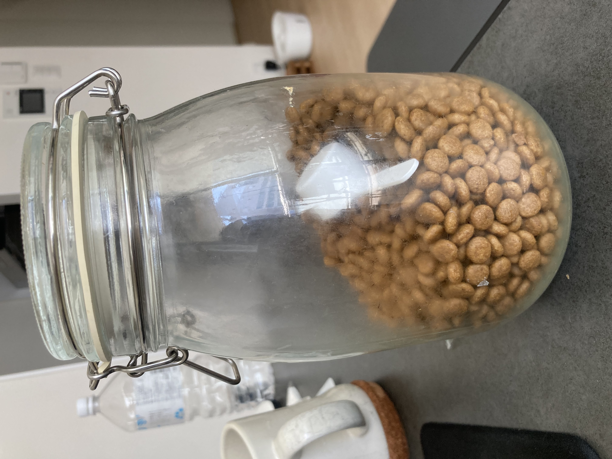
| 概要 | 朝と夜、1日に2回お薬をあげてください。（自動給餌機可） |
|---|---|
| 方法 | AIM1袋（味はなるべく日々ローテしてほしい）と1錠を入れてほしい。①と同じ器に入れてもOK。ちゅーるを薬に少しつけてごはんと混ぜるとなお食べやすいので良し。 |
| 場所 | 薬、AIMはじめとした食べ物：電子レンジ上のバスケットの中 |
| 注意 |
処方上朝：1錠、夜：1錠なので飲んでほしいが、ぶっちゃけ1日2日飲まなくても問題なし。 だけど、次回薬セットする時、前回分を飲みそこねてないか念のため確認はしてほしい。 もし前回飲んでなくてその場であげれそうならあげて欲しい（チュールとかお菓子と一緒に）。2日以上前の薬であればもう捨ててよし。 |
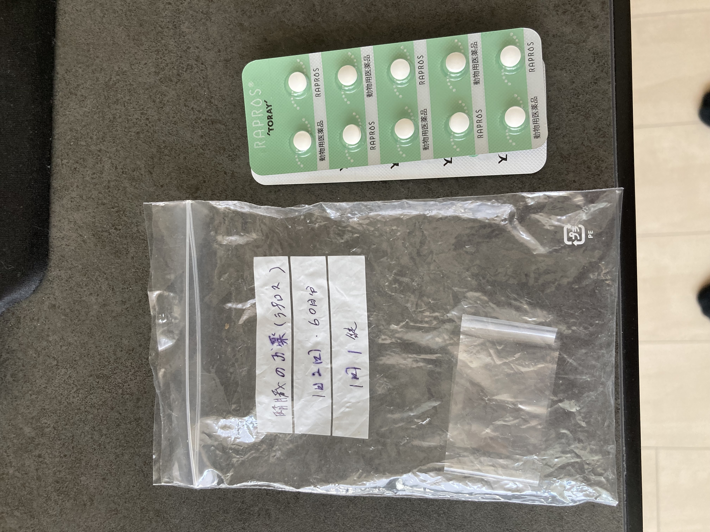
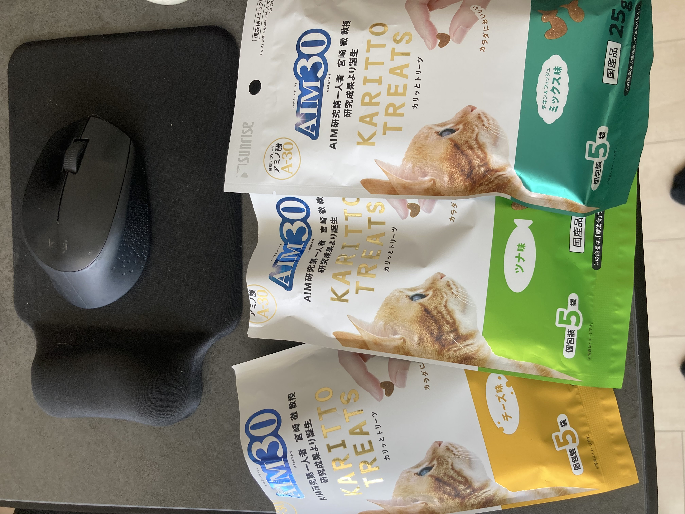
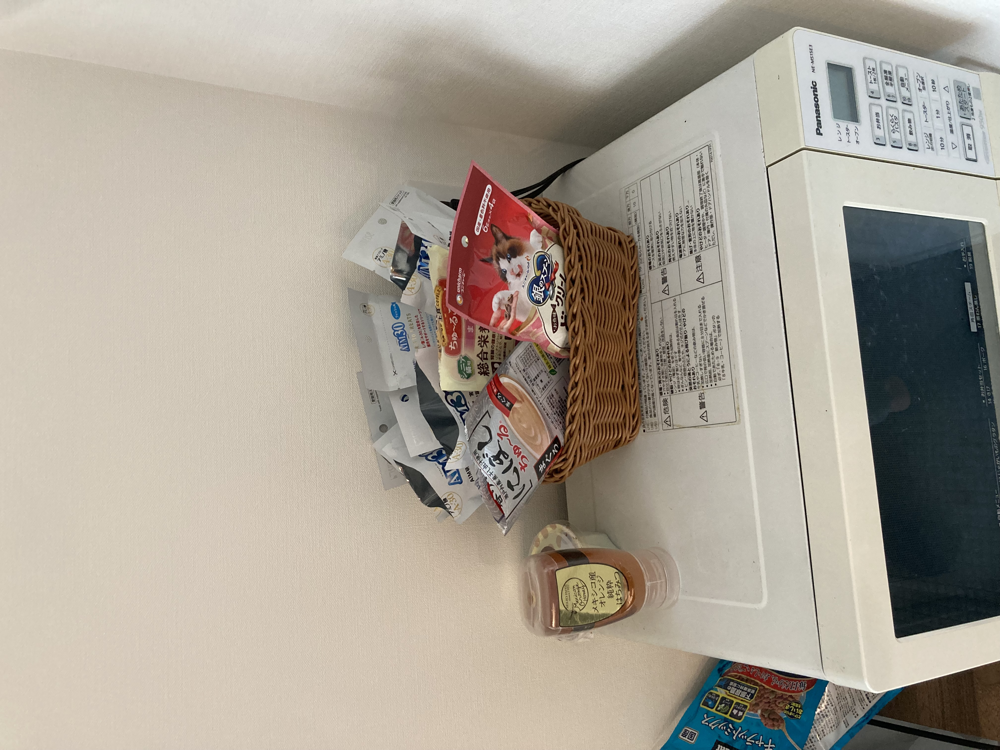
| 概要 | 巡る水を掃除してほしい。 |
|---|---|
| 方法 | 動画を参照 |
| 場所 | 巡る水：自動給餌機の並びにある水が巡ってる白いやつ。 |
| 注意 | よーく洗剤を落としてほしい。 |
| 概要 | 万一の停電に備え、うちやくんが出かけるタイミングで巡る水とは別に、器に水を入れて置いておいてほしい。 |
|---|---|
| 方法 | 浄水器（浄水モード）から出した水を器に入れて、自動給餌気隣にある木の台かなんかに置く。 |
| 場所 | 器：キッチン上の棚の中。白いプラスチックのやつ。 |
| 注意 | 帰宅したら水を捨て、次回でかける時もお水を器に入れてでかけてね。 |
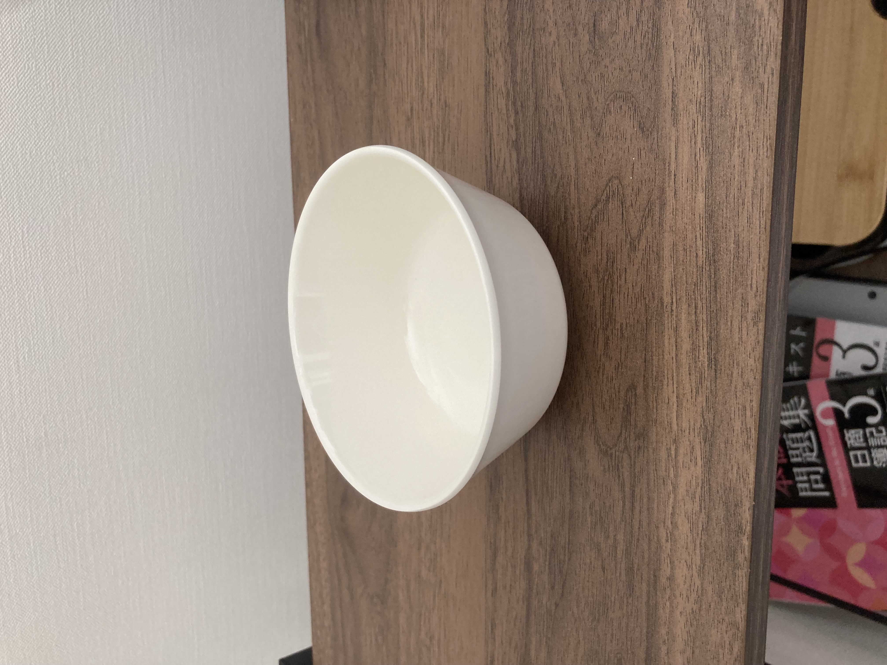
| 概要 | お手洗いシートを替えてほしい。 |
|---|---|
| 方法 |
お手洗いの底のトレーを手前に引き出すことでシート交換する。 使用済みのシートはビニール袋に入れてゴミ箱へ。除菌シートで軽くトレーを拭いてもらって、新しいシートをセットして終わり。 大体水曜日に1回、土曜日に1回、週2回替えている。 |
| 場所 |
お手洗いシート：玄関入ってすぐ右手の物入 除菌シート：玄関入ってつきあたりのすぐ右手の物入 ビニール袋：キッチン引き出し |
| 注意 | シートをトレーの四隅にきちっと敷かない状態でセットするとおしっこが直にトレーに行くのでしっかり敷いてほしい。 |
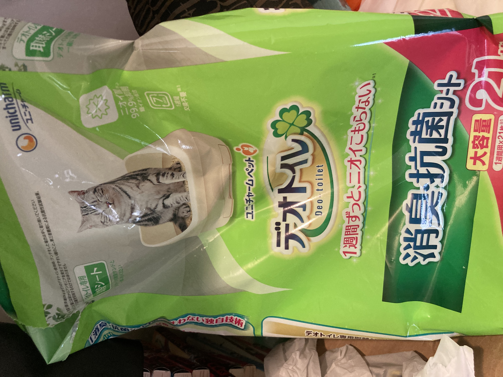
| 概要 | 気づいたタイミングでうんこを取ってほしい💩 |
|---|---|
| 方法 | お手洗いに設定しているスコップでうんこを掬って、そのまま人間用トイレに流す。 |
| 場所 | トイレ：玄関入ってつきあたり |
| 注意 | 使用後は除菌シートでスコップを拭くと吉。 |
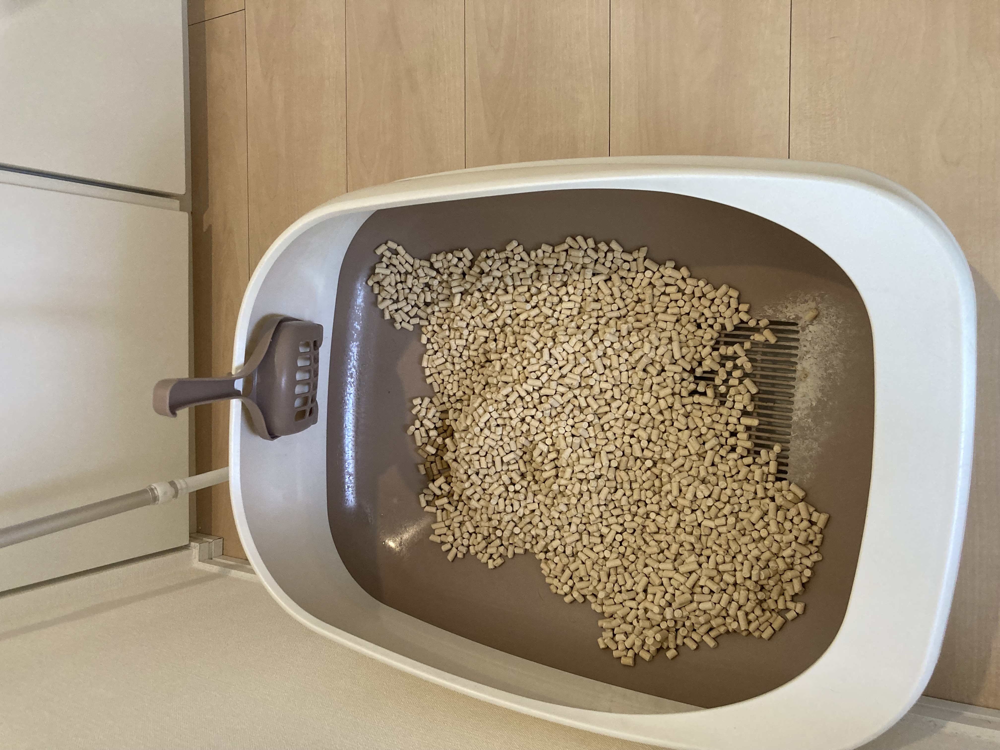
| 概要 | よきなタイミングでブラッシングしてほしい。 |
|---|---|
| 方法 | ブラシで体を漉いてほしい。結構おとなしくやらせてくれるので大丈夫だと思う。 |
| 場所 | ブラシ：玄関入ってすぐ右手の物入。黄緑色のやつ。 |
| 注意 | ブラシをあまり深く食い込ませない程度ですく。 |
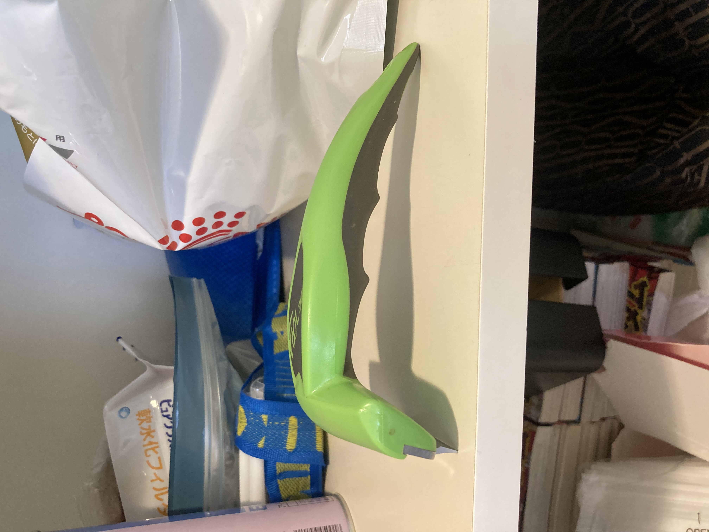
| 概要 | よきなタイミングで掃除機をかけておいてほしい。 |
|---|---|
| 方法 |
バッテリーを抜いて掃除機にセット、電源入れてかける。強弱モードは勝手に調整されるので電源入れるだけ。 かけ終わったらバッテリー抜いてバッテリー置き場へセット。掃除機は立てかける。 |
| 場所 | 掃除機：洗面所入口前 |
| 注意 | 特になし。 |
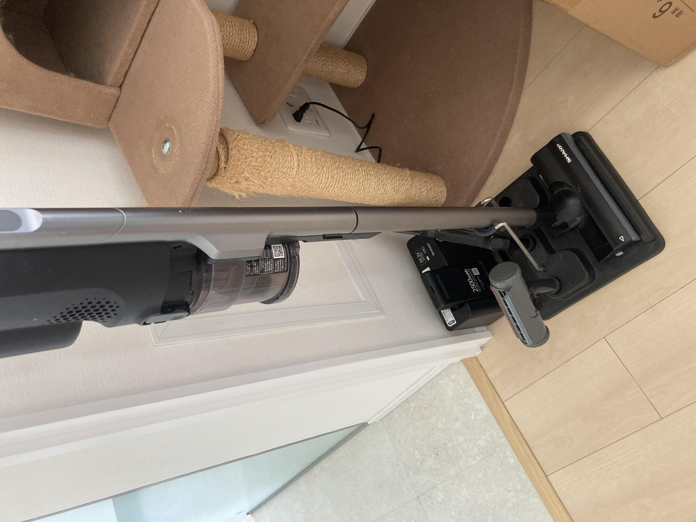
| 概要 |
大丈夫だとは思っているが、本当になんかやばそうな時はかかりつけの獣医さんに連絡をお願いします。 今週土曜日先生のところ行くので内谷くんのことは話しておきます。引地たみこですって言えば通じる。 |
|---|---|
| URL | |
| 電話 | 03-5454-2121 |
| 先生 | 小林せんせい（とても信頼できる素晴らしい先生） |
| 概要 | 写真を送ってほしい、短くていいので動画を送ってほしい、とにかく元気な姿を見せてほしい。 |
|---|
| 概要 |
基本的にツンとしてるので放っておいてほしいタイプではあるが、さみしがり屋でもあるため、声をかけてあげてほしい。 お話したがると思う。気が済んだら寝ると思う。 |
|---|
| 概要 | ガジュマルに水をやってほしい。 |
|---|---|
| 方法 | やかん一杯分の水をまんべんなくかけてほしい。 |
| 場所 |
ガジュマル：リビング窓脇 やかん：キッチン |
| 注意 | 特になし。 |
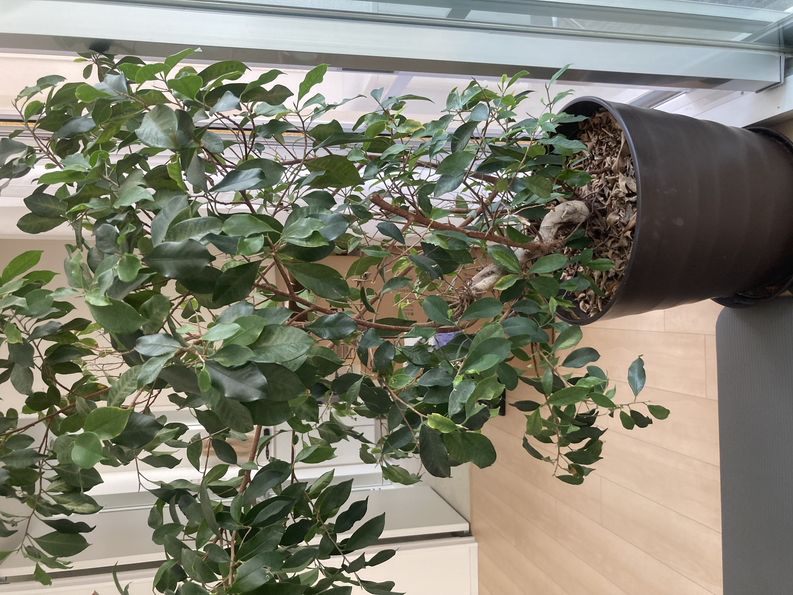
| 概要 |
以下2パターンでしかゴミ捨て場に辿りつけない。 方法1) エレベータでB1へ行く。（階段では行けない） 方法2) 1Fエントランスを出て外からマンションのドアを開けて行く。 |
|---|---|
| 注意 | エレベータやエントランスは黒いトコに鍵当てて起動させる。玄関の扉は鍵穴に挿して開け閉め（開：左回り、閉：右回り）する。 |
| 注意そのもの |
家の窓を閉めない状態で鍵を閉めると半端じゃない音量の警報が鳴ってそっこーでSECOMが来るため、家を出るときは必ず家中の窓を閉めた状態で出よう。 なお、警報音はまじでうるさいし、こっちは誤ってやっちゃっただけなのにSECOMは本気で心配しにやって来るから鬱陶しいったらないので、気を付けたほうがいい。 |
|---|
| 概要 |
家の中は禁煙。吸う際はベランダで（ドアは閉める）、吸い終わったら吸い殻は念のため水で消し、ゴミ箱へＧＯ。 たみこのため、念のため手を洗ってほしい。 うちやくんなら大丈夫だと思うが、しつこいけど、火事だけは気を付けて🚬🔥🚫 |
|---|
| 概要 |
モニター（壁にあるやつ）がピンポーンをキャッチする。わりに音でかい。 「通話」を押すとピンポンした人と会話できるので、エントランスを通してよければ「解錠」を押下する👆 続いて玄関のピンポンをおそらく押してくると思うので、普通にドア開けるなりして対応すればOK✌ |
|---|
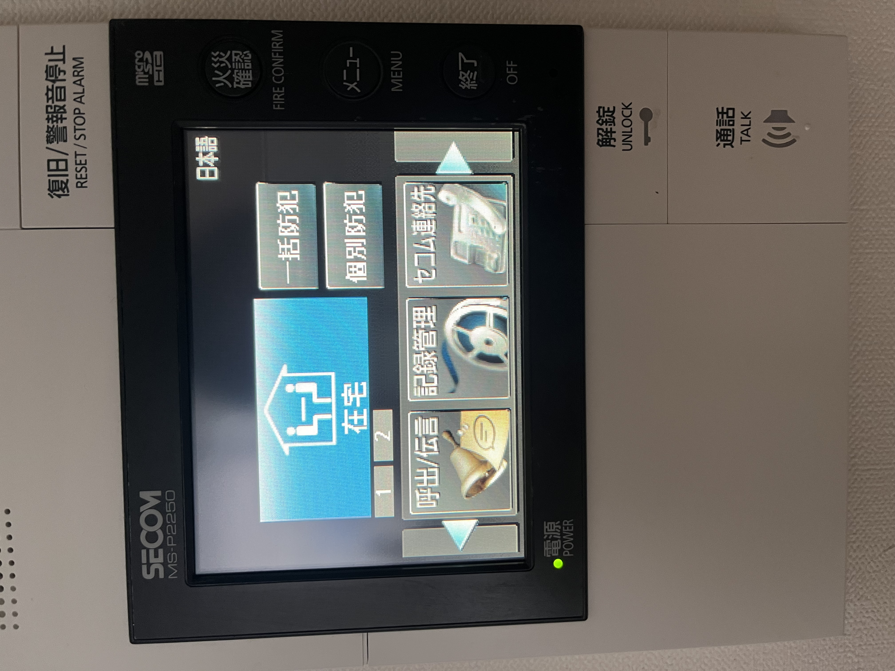
| 愚痴 |
無駄に色々洗濯モードが用意されているが、以下のやり方以外やらないほうがいい。 このやり方は数々の失敗を経てたどり着いた、今のところ最適な方法。 私は今後ドラム式は使いたくないし、洗濯機は縦型に限る🤮 1) トレーを手前に引き、一番左の窪みに「洗剤30ml」を投入 2) 左から二番目の窪みに「柔軟剤30ml」を投入してトレーを閉じる 3) 「Speed Wash」を選択（＝パネル表示が"00:15"になる） 4) 「Dry」を2回押下（＝パネル表示が"30"になる） 5) 「▷||」を押下（＝パネル表示が"00:45"になって、洗濯がスタートする（45分で洗濯終わるよって意味）） |
|---|---|
| 場所 |
洗剤や洗濯物入れ：洗面所下。柔軟剤、洗剤などは好きに使ってください。 ハンガーやジャラジャラやタオル：洗面所入ってすぐ左の棚の中。 |
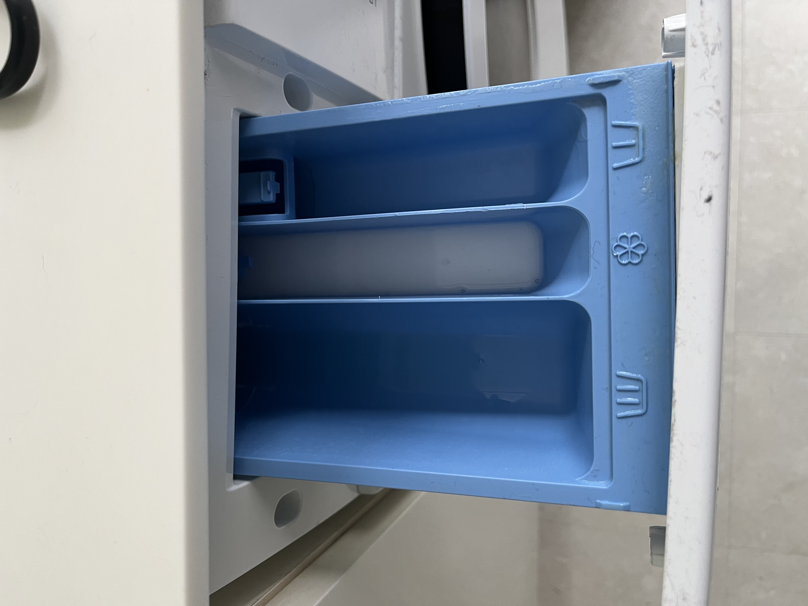
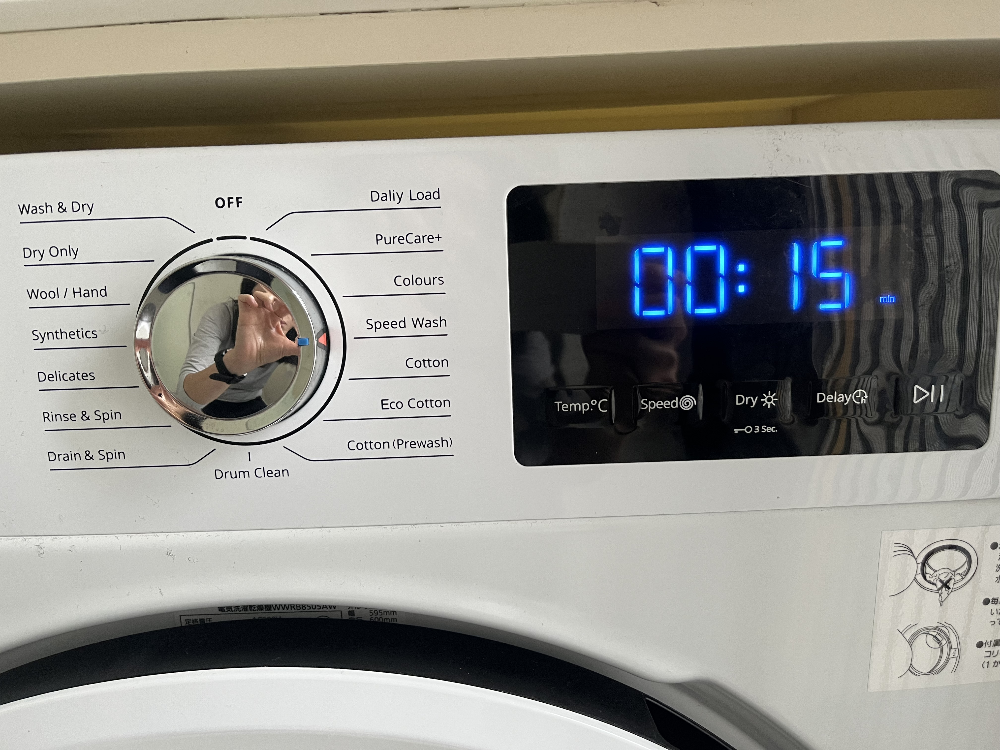
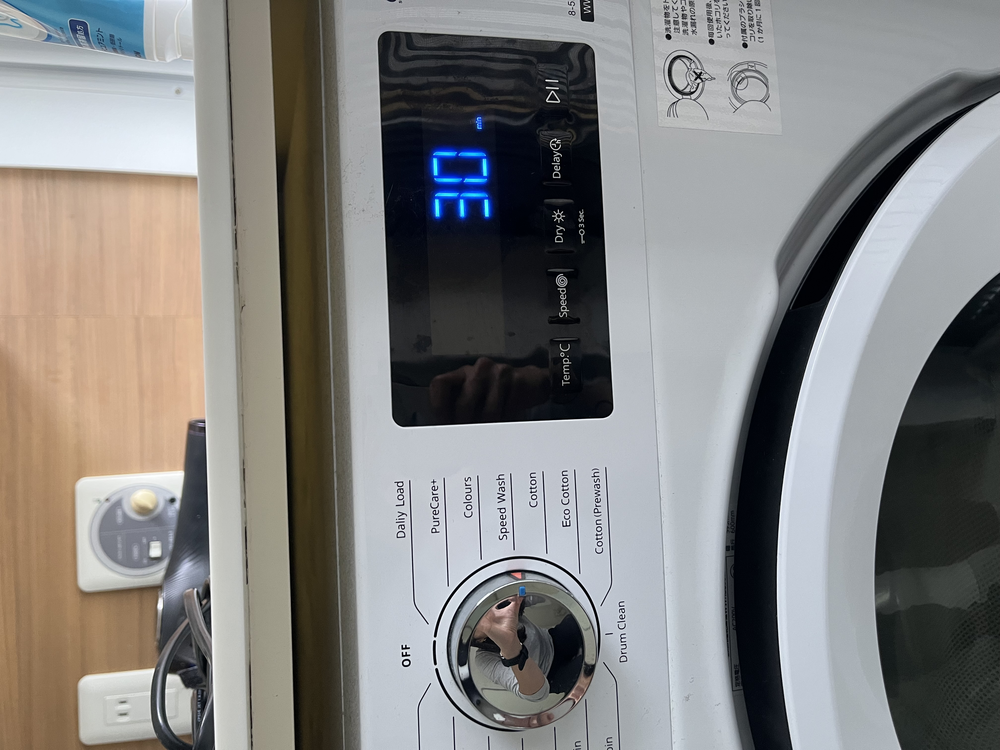
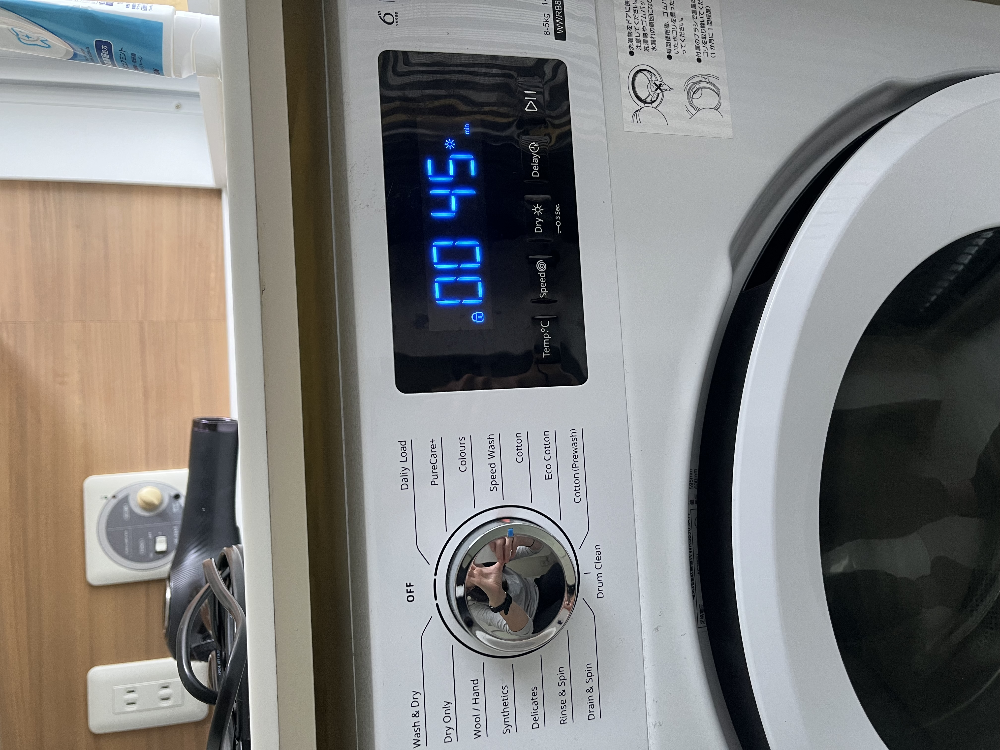
| 場所 |
玄関入ってつきあたりの右手の物入上。分厚いファイルに全て入ってる |
|---|
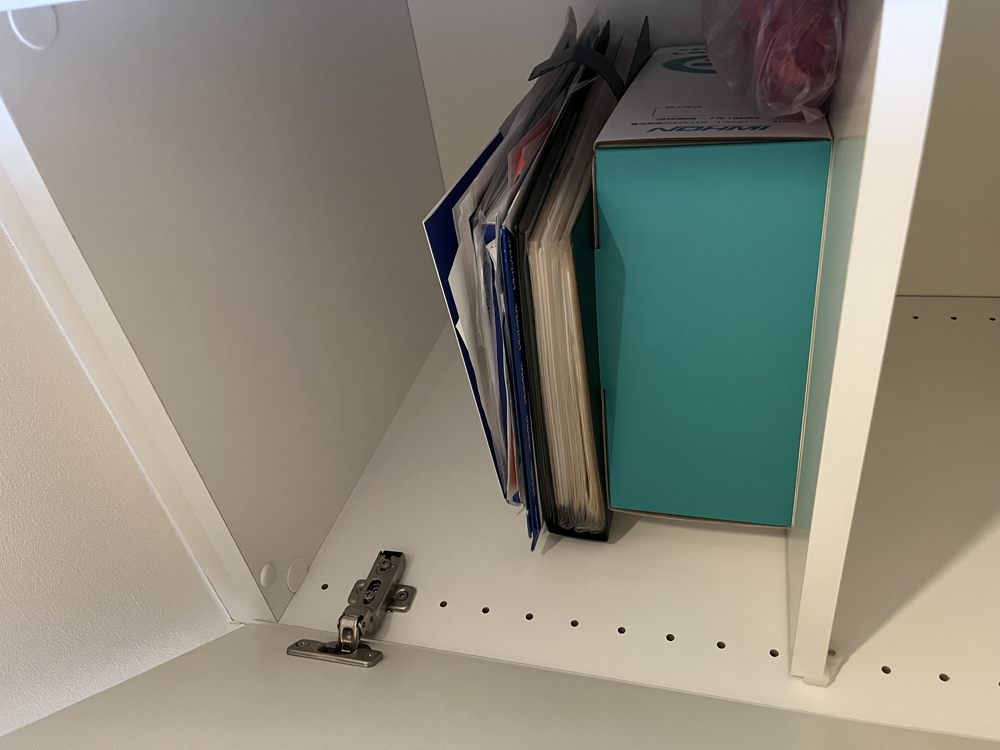
| 情報 |
SSID：SPW_X12_572e33 PASS：176ad96fa1765 |
|---|
| 注意 | 「停止ボタン２回」押さないと停止されないトラップ。 |
|---|